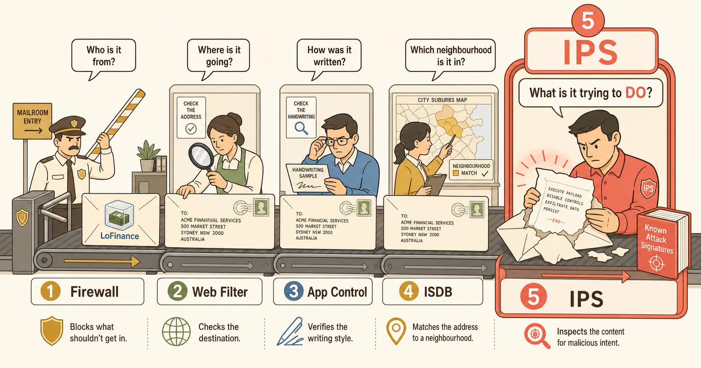
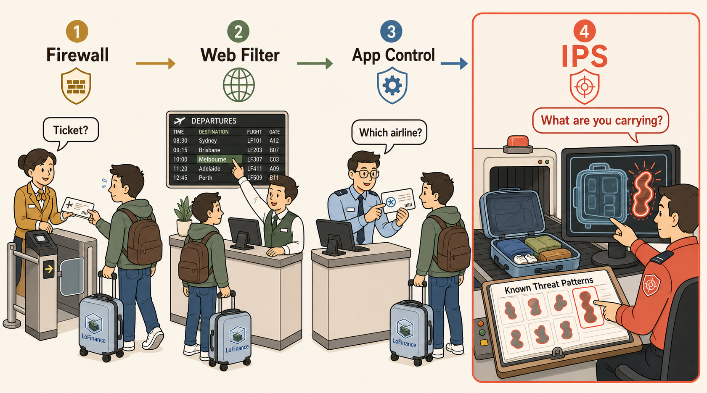

IPS in One Sentence
Every other security profile has a lane. Antivirus worries about malware. Web Filter worries about websites. Application Control worries about applications. IPS worries about none of those directly. It watches for the attack itself — the exploit attempt travelling inside otherwise ordinary-looking traffic — and blocks it mid-flight.
The Mailroom
Picture a corporate mailroom. Several people handle every envelope before it reaches a desk — and each one is asking a completely different question.

The Airport Checkpoint
If the mailroom shows you the idea, the airport shows you the threat model. Same layered inspection, but now the danger is physical — and IPS becomes the one scanner that looks for what could actually hurt someone.

The One Thing to Remember
Firewall = permission. Web Filter = address. App Control = handwriting. ISDB = suburb. IPS = intent. Four inspectors read the envelope; one opens it and checks the contents against a library of known attacks — then stops the dangerous ones before they arrive.